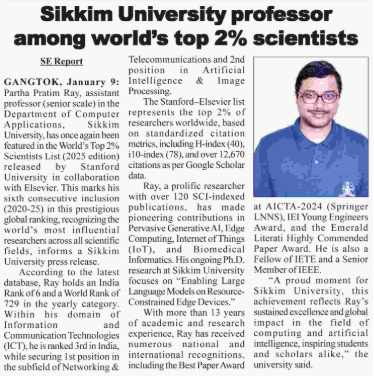

Awards, Fellowships & Achievements
Editorial & Professional Recognition
- Associate Editor, Frontiers in Communications and Networks (since November 2025)
- Associate Editor, Frontiers in Bioinformatics (since September 2025)
Global Research Recognition
- Recognized as one of the World’s Top 2% Scientists, Stanford University, USA (Career & Yearly Database), 2025
- Recognized as one of the World’s Top 2% Scientists, Stanford University, USA, 2024
- Recognized as one of the World’s Top 2% Scientists, Stanford University, USA, 2023
- Recognized as one of the World’s Top 2% Scientists, Stanford University, USA, 2022
- Recognized as one of the World’s Top 2% Scientists, Stanford University, USA, 2021
- Recognized as one of the World’s Top 2% Scientists, Stanford University, USA, 2020
Media Coverage & News Highlights
-
Featured in Sikkim Express e-paper highlighting recognition as one of the
World’s Top 2% Scientists, dated 10 January 2026.
View e-paper news

-
Featured in The Indian Express e-paper highlighting recognition as one of the
World’s Top 2% Scientists, dated 5 October 2025.
View e-paper news
-
Featured in Education Times e-paper highlighting recognition as one of the
World’s Top 2% Scientists, dated 23 September 2025.
View e-paper news
-
Featured in Jagran Josh e-paper highlighting recognition as one of the
World’s Top 2% Scientists, dated 23 September 2025.
View e-paper news
-
Featured in Sikkim Chronicle e-paper highlighting recognition as one of the
World’s Top 2% Scientists, dated 2 December 2020.
View e-paper news
Academic & Institutional Awards
- Special Award for publication in highest impact journal, Sikkim University, 2025
- Best Paper Award, 2nd International Conference on Artificial Intelligence, Computing Technologies, Internet of Things and Data Analytics (AICTA-2024), LNNS Springer, NIT Raipur
- University Publication Award, School of Physical Sciences, Sikkim University, 2023
- Felicitated for “Top Downloaded Paper 2018–2019”, Transactions on Emerging Telecommunications Technologies, Wiley, 2020
- Emerald Literati Awards 2019 — Highly Commended, Sensor Review
Professional Elevations & Honors
- Elevated to Fellow, IETE, 2023
- Elevated to Senior Member, IEEE, February 16, 2019
- IEI Young Engineers Award 2019–20, Computer Engineering Division, Institution of Engineers (India)
National & International Recognition
- Invited Member, National Innovation Club Meeting, Rashtrapati Bhavan Cultural Centre, New Delhi, Festival of Innovation 2017
- Selected for Science Academies’ Summer Research Fellowship Programme (SRFP), IAS–INSA–NAS
Early Career Awards & Fellowships
- Young Scientist Award, Venus International Foundation, 2017
- Bharat Vikas Award, Institute of Self Reliance, 2017
- Best Professor in IT Academic Excellence Award, ICBM-AMP, 2017
- Young Achiever Award, IEAE, 2018
- Post-Graduate Scholarship, AICTE (2009–2011)